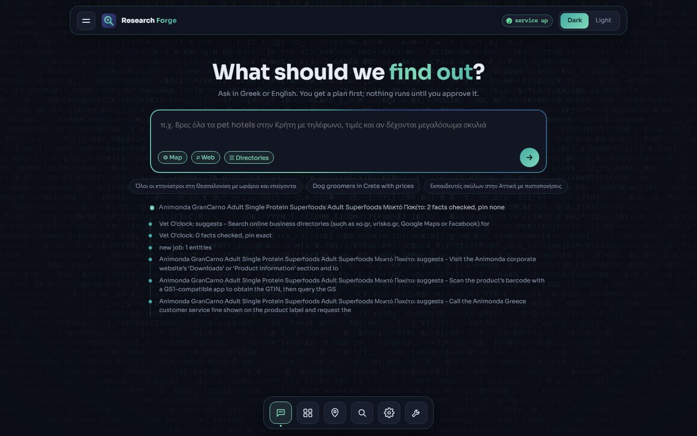
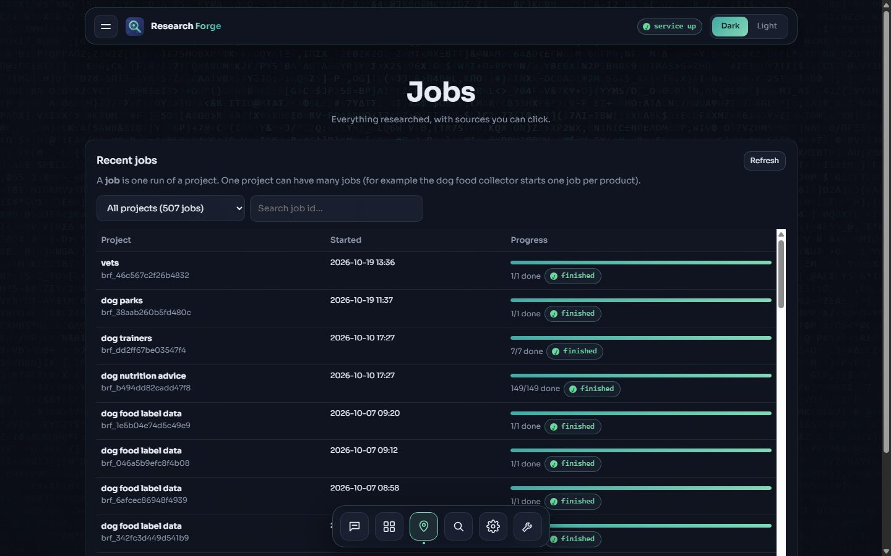
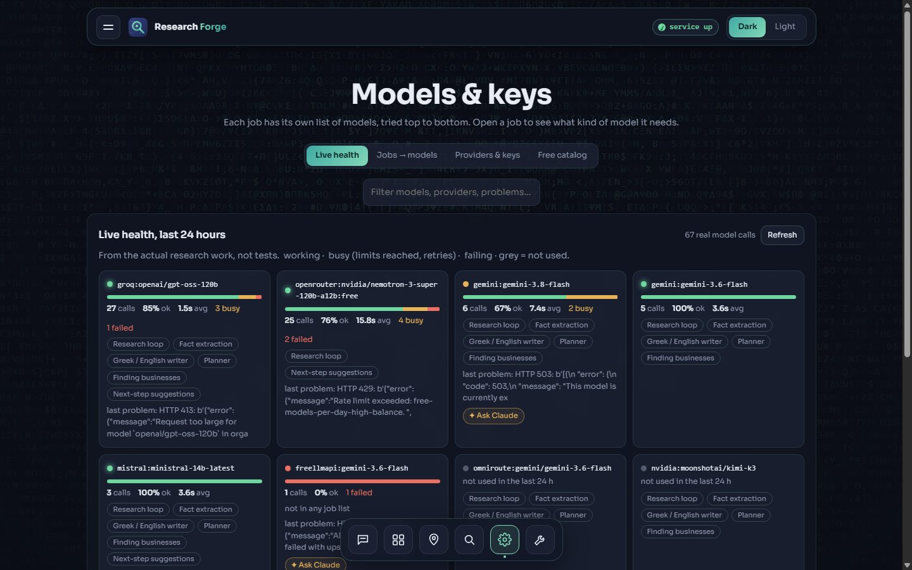

Research Forge
Give it a list of names. It keeps only the facts it can prove.
What it does
You give it a task (what kind of thing to research and which fields you want, for example the phone, website and opening hours of vets) and a list of names. For each name it searches the web, reads the pages, and keeps a fact only when the exact quote is on a page it read in that run.
Then a writer turns the proven facts into a Greek and an English description, and it is not allowed to add any number that is not in the facts. Whatever it could not prove stays empty and is listed as missing, with a hint of where a person could look next.
| Without this | With this |
|---|---|
| Copy-pasting phone numbers and hours from ten sites per business | One request researches the whole list on its own |
| AI answers that sound right but are made up | Every fact comes with the page and the exact sentence it was read from |
See it



The screens
| Screen | What it is for |
|---|---|
| Ask | Type a request in plain words. It becomes a draft plan. Nothing runs until you approve it. |
| Projects | Your task configs and drafts waiting for approval. |
| Jobs & map | Running and finished batches, results on a map, download as JSON or CSV. |
| Quick tools | One-off web search, read a page, find a place, research one thing now. |
| Models & keys | Which model does which job, keys per provider, live health. |
| Fix list | Problems reported by you or by AI agents, and the quality score over time. |
How it stays honest and reliable
Proof or nothing
A fact counts only with its page and its exact sentence. Coordinates come only from OpenStreetMap.
Six jobs, each with fallbacks
Agent, extract, writer, planner, discover and propose each have their own model order. If one model fails or is rate limited, the next takes over.
Crash-safe batches
A batch splits into one unit per name. Workers take units with a lease, so a restart never loses work. A watchdog stops a stalled unit and gives up after three tries.
Memory of past research
Verified findings are stored so you can ask in plain words later. A hit is a lead: check its source before use.
Reports
A written report for a project: summary, numbered findings, a comparison table, and a source link on every value.
Daily self-check
Every morning it tests every part and files a problem report if something broke.
Use it from AI helpers
Every screen's work is also a tool that AI agents can call over MCP (a plug that lets an AI helper use a tool). Tools that spend a day of free allowance, such as starting a big batch, need your OK first.
Who it is for
- Anyone who needs checked facts about many named things (businesses, places, products) with a source on every value.
- People who build with AI helpers and want research they can trust, not guesses.
It runs on your own small server, keeps its keys there, and has no tracking. It uses free AI models and free allowances, so cost per question is nothing; the limit is how many questions those free services accept per day.
How to get it
This one is on request. The code is private for now, so there is no public download.
Tell me what you would use it for, and I will tell you what is possible.
Licence: Apache-2.0. Version 0.1.0.